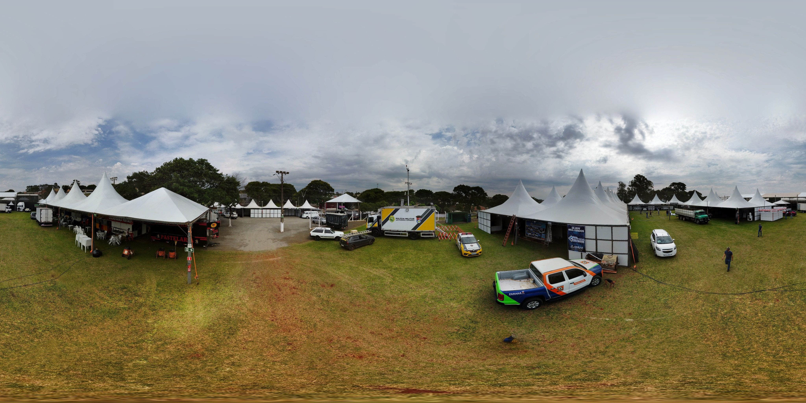

Bem-vindo ao Meu Mundo 360°
Explore minha coleção de fotos imersivas 360° ao redor do globo. Selecione uma cidade na barra lateral para iniciar sua jornada virtual.

Cambira
Santa Fé do Sul
Galeria da Cidade
Selecione uma foto para ver em 360°